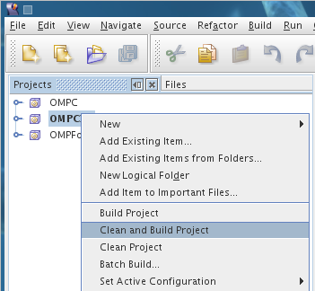
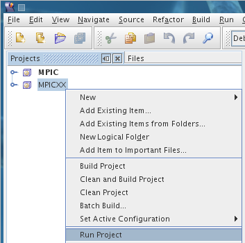

Running OpenMP Code
To run your OpenMP code:
- Right click your OpenMP project and select
“Clean and Build Project”.

- Right click your OpenMP project and select “Run
project”.

- A terminal will open showing you the output of
your program. The terminal will exit when your
program finishes executing.
Manipulating the Number of Threads
This section explains how to manipulate the number of
thread your process uses. There are a couple of ways
to do this depending on whether you're running your
code from SunStudio or straight from the command
line.
Manipulating the Number of Threads from SunStudio
- There are a couple methods in the OpenMP API that
will manipulate the number of threads your code uses.
By default and for efficiency reasons, OpenMP will
only start as many threads as there are processors on
the system. To override this behavior you must set
OMP_DYNAMIC to false with the method omp_set_dynamic.
- Once you've used omp_set_dynamic, you will be
able to set the number of threads using the
omp_set_num_threads method.
- The following are example usages in
C/C++/Fortran:
C/C++
omp_set_dynamic(0);
omp_set_num_threads(10);
Fortran
call
omp_set_dynamic(.FALSE.)
call omp_set_num_threads(10)
NOTE: On both the StarHPC remote
cluster and standalone virtual machine image, the
SunStudio projects included contain example usage of
this code.
Manipulating the Number of Threads from the Command
Line
This section assumes you will be executing your code
manually from command line.
- There are a couple environment variables that
will manipulate the number of threads your code uses.
By default and for efficiency reasons, OpenMP will
only start as many threads as there are processors on
the system. To override this behavior the environment
variable OMP_DYNAMIC must be set to false by running
in a terminal:
export
OMP_DYNAMIC=FALSE
NOTE: On both
the StarHPC remote cluster and standalone virtual
machine image, OMP_DYNAMIC is set to FALSE by default
for all terminal sessions. This means you do not have
to export OMP_DYNAMIC for each terminal you open a
new terminal.
- After this variable is set to False, OpenMP will
start any number of threads determined by the
environment variable OMP_NUM_THREADS. If this
variable is not set it defaults to the number of
processors on the system. For example, to run your
code with 4 threads, run in a terminal:
export
OMP_NUM_THREADS=4
In the same
terminal session, run your executable:
./yourexecutable
NOTE: The
OMP_NUM_THREADS variable must be set each time you
open a terminal.
- To use more/less threads set OMP_NUM_THREADS
accordingly.